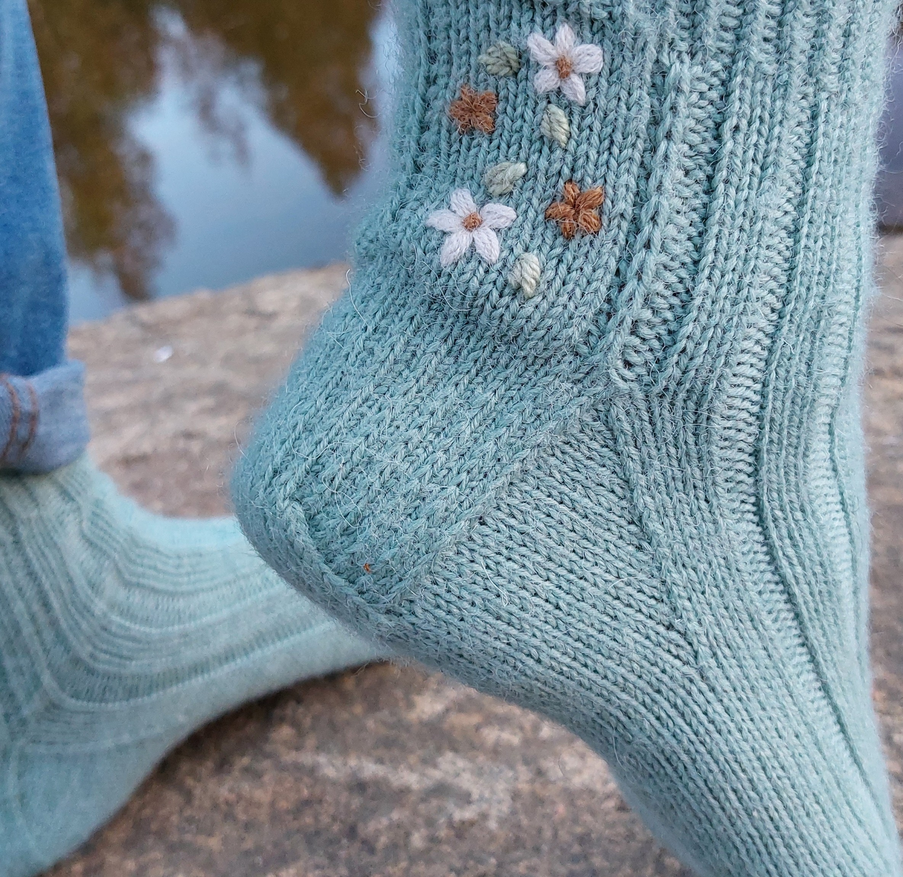

Perinteinen vahvennettu kantapää
Syötä laskuriin sukkasi varren silmukoiden määrä ja laskurin avulla voit luoda kantapään ohjeen villasukkiin vauvasta vaariin.

Aloita syöttämällä silmukkamäärä laskuriin!
Kantalappu
Vahvennettu neule
Aloita vahvennettu neule.
Nurja puoli: Nosta ensimmäinen silmukka neulomatta ja neulo kerros nurin loppuun.
Oikea puoli: *Nosta 1 silmukka neulomatta, neulo 1 silmukka oikein.* Toista *-* kerroksen loppuun.
Kantapään käännös
Jatka samaa vahvennettua neuletta myös käännöksessä.
Jaa jäljelle jäävät silmukat kahdelle puikolle.
Silmukoiden poimiminen
Kiilakavennukset
Neulo 1. puikon lopussa 2 oikein yhteen ja 4. puikon alussa ssk-kavennus.
Vinkit!
Voit jatkaa kiilakavennuksia, kunnes sukka on sopivan kokoinen.